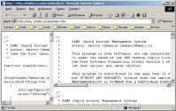
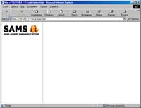
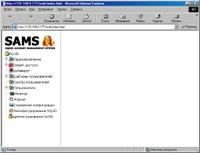

|  | If SAMS WEB-interface don't worked and you can see this picture:
Switch on php-support in the Apache web serwer.
LoadModule php4_module libexec/libphp4.so
|
|  | If you can see this picture or blank page only:
1.Check a MySQL connection 2.Uncomment a MySQL module of the php.ini file 3.Check data of the sams.conf file SQUID_DB=squidlog
|
|  | If you can see this picture:
Switch on global variables in PHP. Uncomment or add in the php.ini next string:
|
If you see this message when is execute the configure script:
"checking for mysql.h in... configure: error: Cannot find MySQL's mysql.h in..."
MySQL is working.
Don't found a include files of the MySQL. Set up MySQL include files or execute the configure with options --with-mysql-includes=PATH
If you see this error when execute sams, samsf or samsdaemon:
# sams
/libexec/ld-elf.so.1: Shared object "libmysqlclient.so.14" not found, required by "sams"
Don't fing libmysqlclient.so.14 library. Create symlink to this file:
ln -s libmysqlclient.so.14.x.x libmysqlclient.so.14
P>Compiling the SAMS of the FreeBSD, OpenBSD
Install gmake
# ./configure
next step:
# gmake
The Sams do not reconfigure the squid.conf file. But in the squid.conf file is insert string:
created by SAMS _sams_2004.10.12 12:56:11
SAMS don't found :TAG" in the squid.conf file.
Example:
# TAG: acl
If you looking next error:
šFatal error: Call to undefined function: gzopen() in ....../sams/src/backup.php on line XXX
Stt up new php version or make php with zip compression support.